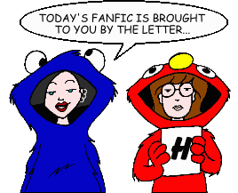
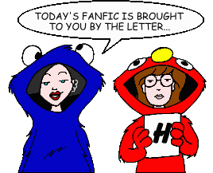

Fan Fiction
"H" by Author

Fan Fiction
"H" by Author

|
Authors: If you no longer wish for any of your stories to be posted, please send e-mail to fanfic@lawndale.net and I will remove them at once. |
| Hash (swing_kid17@hotmail.com) |
| Egg-cept Responsability Category: School Situations As a human development exercise for Ms. Barch's science class, Daria and Connor are forced to experience what it's like to be married for a week. But what they end up learning might not have anything to do with the assignment. And what was that about an egg? |
| Just Add Connor Category: School Situations Daria and Jane befriend a new student at Lawndale High. But, after Daria spends a day with him, the old feud with Jane over Tom resurfaces. Will this new student tear apart Lawndale's strongest friendship? Or will our favorite cynics take him under their wings? |
| Heather Murphy (jetgirl101@hotmail.com) |
| Quinn Started It Category: Sci-Fi, Fantasy & Horror A story that has something for everyone -- blood, gore, romance, and revenge -- as Quinn goes to extraordinary lengths to get even with Daria. Note: This story includes content (language, violence, or sexual situations) that may not be appropriate for some readers. |
| Helen A. (helen.a@chickmail.com) |
| Musician Wanted Category: Miscellaneous Quinn decides that she needs to date a musician to be more popular. Guess who she picks? |
| Hello Kitty (hello_kitty_2000_@hotmail.com) |
| Home Sweet Home Category: Miscellaneous Trent tells Daria how he feels about her. Or at least he thinks he does; instead, he ends up telling Quinn, Helen and Jake. Meanwhile Aunt Amy has an announcement that comes out of the blue and the Morgendorffers get a big shock, which makes them realize how lucky they really are. |
| Hikhali (hikhali@hotmail.com) |
| Daria the Saturnine Category: Miscellaneous Daria does stuff. No big deal, really. |
| Ever Never: A Daria Crossover Category: Crossovers & Parodies A tale of a young boy who falls in love. Sappy, isn't it? A parody of the film "Ever After: A Cinderella Tale." |
| Mormon Cornfield Category: Miscellaneous The Lawndale gang take a trip to a farm. Based on a dream by the author (who hopes this story doesn't offend Mormons). |
| Secrets, Changes, and Other Disturbing Parts of Growing Up Category: Miscellaneous Daria, faced with parents and family blind to her emotions, turns to Jane and Trent for solace. |
| The Way We Were Meant to Be Category: Romance Daria faces changes in her life... some good, some bad. A five-part story. |
| Huggy |
| The Quinn Diaries Category: Series & Multi-Part Stories (Past & Future) A multi-part series, set after the events in "Is It College Yet?", that examines Quinn's attempt to abandon her shallow ways and act like "a normal person." |